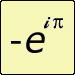

CSP-Rules-V2.1
A general Pattern-Based solver of finite Constraint Satisfaction Problems
This is to announce the publication of CSP-Rules-V2.1: https://github.com/denis-berthier/CSP-Rules-V2.1
1. What is CSP-Rules?
A finite binary Constraint Satisfaction Problems (CSP) is defined by a finite set of variables (hereafter called the CSP-Variables), each with a finite domain; the problem is to find a value for each variable in its domain, in such a way that these values satisfy a set of pre-defined binary constraints. A typical popular example is Sudoku.
CSP-Rules is a general pattern-based (or rule-based) solver of finite binary CSPs.
It includes a Latin Squares solver, a Sudoku solver, a Futoshiki solver, a Kakuro solver, a solver of Map Colouring Problems, a Hidato solver, a Numbrix solver and a Slitherlink solver.
2. The [PBCS] or CSP-Rules approach to CSP solving
In the CSP-Rules approach, a possible value of a CSP-Variable is called a candidate and a binary constraint is represented by a direct contradiction link (or link for short) between two candidates.
CSP-Rules is inherently associated with the approach to CSP solving defined and largely illustrated in my book “Pattern-Based Constraint Satisfaction and Logic Puzzles” ([PBCS]). This approach can be traced back, in the particular Sudoku context, to my much older book “The Hidden Logic of Sudoku” ([HLS]). CSP-Rules is best considered as a companion to [PBCS] and [HLS]. The books develop the theoretical part and the software is the proof that the theories are widely applicable.
In the [PBCS] approach, pertaining to the very general “progressive domain restriction” family of CSP solving techniques, the domain of each CSP-Variable is represented by a monotonously decreasing set of candidates and the fundamental concept is that of a resolution rule, i.e. a rule of the form “pattern => elimination of a candidate” or (more rarely in practice) “pattern => assertion of a value for a CSP-Variable”.
Here, “pattern” is a clearly defined set of logical conditions, based only on the fixed set of CSP-Variables, the fixed set of links (i.e. of direct binary contradictions) between candidates and on the current situation (i.e. the remaining candidates for each variable). This pattern must be precisely defined so as to imply the conclusion in an otherwise context-independent way (i.e. in a way that does not depend on any CSP-Variable, link, candidate or value not explicitly mentioned in the pattern). Of course, the resolution rule itself must be provable from the CSP axioms.
Considering this definition, an implementation in terms of rules of a forward-chaining inference engine seemed relevant (in spite of possible a priori performance issues). Both the oldest and the current implementations of CSP-Rules are therefore based on CLIPS, the most widely used (and tested) inference engine. CLIPS is written in C, is highly portable, has been public since 1996; it implements the RETE algorithm with drastic performance improvements – and it’s open source and free.
One essential aspect of the [PBCS] approach is the introduction of additional CSP-Variables: the set of CSP-Variables is extended beyond the originally given ones. As a simple illustration of this idea in the Sudoku case, in addition to the “natural” rc CSP-Variables (represented by the cells of the standard Sudoku grid), I introduced (in [HLS1]) new rn, cn and bn variables, represented by the cells of the three additional spaces of my “Extended Sudoku Board” (a copy of which is present in the “Publications” folder of CSP-Rules-V2.1.)
A priori, CSP-Rules deals only with binary constraints, but the applications studied in [PBCS] and included in the CSP-Rules-V2.1 package (namely: solvers for Latin Squares, Sudoku, Futoshiki, Kakuro, Map Colouring, Numbrix, Hidato and Slithering) show that many types of non-binary constraints can be efficiently transformed into binary ones by adding problem-specific CSP-Variables, thus making them amenable to the CSP-Rules treatment.
Patterns in CSP-Rules can take many forms, but the most powerful generic ones are various kinds of chains (bivalue-chains, z-chains, t-whips, whips, g-whips…). A chain is defined as a continuous sequence of candidates, where continuity means that each candidate is linked to the previous one. In the context of logic games, these chains can be considered as logical abstractions of the universal, spontaneous practice of human solvers wondering “can this candidate be true?” and checking for a possible contradiction implied by such a hypothesis; but they also suggest much more constrained ways of proceeding. In particular, the continuity condition is a very strong guide for a human solver looking for chain patterns. More generally, the absence of OR-branching in any of the CSP-Rules chain patterns means that each of them supports a single stream of reasoning.
Instead of having zillions of application-specific rules (like e.g. most existing rule-based Sudoku solvers), the resolution backbone of CSP-Rules consists of only a few types of universal rules – though it remains perfectly compatible with the addition of any number of application-specific rules (see the Slitherlink chapter).
One more essential aspect of the CSP-Rules resolution paradigm is its insistence on using the “simplest-first strategy". Indeed, much of my approach can be considered as a detailed study into possible meanings of “simplest-first search”. At each step of the resolution process, the simplest available rule is applied. Here, “simplest” is not to be understood as it is generally done in the world of AI, i.e. in an abstract logical way that has never had any real application. Simplest is defined precisely in terms of the patterns making the conditions of the rules. In case of chains, simplicity is easy to define: a chain (of any type) is simpler than another chain (of any type) if it is shorter, where the length of a chain is defined as the number of CSP-Variables its definition involves. For chains of same lengths but of different types, it’s also easy to define their relative simplicity (see chapter 4 of the Basic User Manual). As a result, for each family of rules, an intrinsic rating of the difficulty of instances can be defined and it can often be obtained at the end of a single resolution path. The simplest-first strategy is intimately related to the confluence property (see [PBCS]).
3. The contents of CSP-Rules
CSP-Rules consists of a generic part (in the folder “CSP-Rules-Generic”) together with a few application-specific parts aimed at solving some familiar logic puzzles. The application-specific parts are integral members of CSP-Rules. They were chosen in order to illustrate how, by the proper choice of additional CSP-Variables, the generic concepts can be used in so different CSPs as the above-mentioned ones, including some non-binary ones.
The generic part consists of powerful generic resolution rules together with a general mechanism for managing the whole system, including the outputting of solutions in an easy-to-understand, universal notation. The generic part cannot be run alone. It requires an application-specific part to feed it with problem instances in the proper format.
Each application-specific part consists of a specific interfacing with the generic part of CSP-Rules, specific commands for launching the resolution process (they are reviewed in the application-specific chapters in Part II of the Basic User Manual [BUM]), plus a configuration file allowing the user to select general settings and which families of rules he wants to apply. It often also contains application-specific resolution rules.
4. Example:
For making the above more explicit, consider the following (moderately difficult) Sudoku puzzle (created by "Mith"):
. . . 1 3 . . . .
. 1 . . . 4 5 . .
. . 2 . . . . 6 .
1 . . 3 . . . 7 .
2 . . . 5 . . . 8
. 4 . . . 6 . . 9
. 5 . . . . 7 . .
. . 6 7 . . . 9 .
. . . . 8 9 . . .
Here is how the problem is given to SudoRules (the part of CSP-Rules that deals with the Sudoku CSP):
(solve "...13.....1...45....2....6.1..3...7.2...5...8.4...6..9.5....7....67...9.....89...")
And here is how the solution of this puzzle will appear (with variants, depending on which resolution rules have been selected by the user).
Each line starts with the name of a precise pattern, including its size (as described in detail in [PBCS]); the name is followed by the full details of its instantiation and, after a "==>" sign, by the eliminations it allows:
217 candidates, 1371 csp-links and 1371 links. Density = 5.85%
whip[1]: r1n6{c2 .} ==> r2c1 ≠ 6
hidden-single-in-a-column ==> r1c1 = 6
naked-pairs-in-a-block: b5{r4c6 r6c4}{n2 n8} ==> r6c5 ≠ 2, r4c5 ≠ 2
hidden-pairs-in-a-block: b1{r1c3 r3c1}{n4 n5} ==> r3c1 ≠ 9, r3c1 ≠ 8, r3c1 ≠ 7, r3c1 ≠ 3, r1c3 ≠ 9, r1c3 ≠ 8, r1c3 ≠ 7
swordfish-in-columns: n5{c1 c4 c8}{r6 r3 r9} ==> r9c9 ≠ 5, r6c3 ≠ 5, r3c6 ≠ 5
z-chain[4]: r3c6{n7 n8} - r4c6{n8 n2} - b2n2{r1c6 r2c4} - r2n6{c4 .} ==> r2c5 ≠ 7
z-chain[5]: r2n6{c4 c5} - b2n2{r2c5 r1c6} - r4c6{n2 n8} - r3c6{n8 n7} - r3c5{n7 .} ==> r2c4 ≠ 9
z-chain[3]: r7n9{c3 c1} - r2n9{c1 c5} - r4n9{c5 .} ==> r5c3 ≠ 9
z-chain[5]: r5c3{n7 n3} - r6c3{n3 n8} - b5n8{r6c4 r4c6} - r3c6{n8 n7} - r5n7{c6 .} ==> r6c1 ≠ 7
z-chain[5]: r2n6{c5 c4} - b2n2{r2c4 r1c6} - r4c6{n2 n8} - r3c6{n8 n7} - r3c5{n7 .} ==> r2c5 ≠ 9
whip[1]: b2n9{r3c5 .} ==> r3c2 ≠ 9, r3c7 ≠ 9
hidden-single-in-a-block ==> r1c7 = 9
whip[1]: c2n9{r5 .} ==> r4c3 ≠ 9
hidden-pairs-in-a-block: b4{r4c2 r5c2}{n6 n9} ==> r5c2 ≠ 7, r5c2 ≠ 3, r4c2 ≠ 8
whip[1]: b4n7{r6c3 .} ==> r2c3 ≠ 7, r9c3 ≠ 7
biv-chain[3]: r1n5{c6 c3} - r4c3{n5 n8} - r4c6{n8 n2} ==> r1c6 ≠ 2
whip[1]: r1n2{c9 .} ==> r2c8 ≠ 2, r2c9 ≠ 2
hidden-pairs-in-a-row: r2{n2 n6}{c4 c5} ==> r2c4 ≠ 8
biv-chain[4]: r3n5{c4 c1} - b4n5{r6c1 r4c3} - r4n8{c3 c6} - c4n8{r6 r3} ==> r3c4 ≠ 9
hidden-single-in-a-block ==> r3c5 = 9
naked-single ==> r4c5 = 4
naked-single ==> r5c4 = 9
naked-single ==> r5c2 = 6
naked-single ==> r4c2 = 9
hidden-single-in-a-column ==> r6c5 = 7
naked-single ==> r5c6 = 1
hidden-single-in-a-row ==> r5c3 = 7
whip[1]: r5n3{c8 .} ==> r6c7 ≠ 3, r6c8 ≠ 3
biv-chain[3]: b6n3{r5c7 r5c8} - r2c8{n3 n8} - b9n8{r7c8 r8c7} ==> r8c7 ≠ 3
biv-chain[3]: c4n4{r7 r9} - c4n5{r9 r3} - r3c1{n5 n4} ==> r7c1 ≠ 4
biv-chain[4]: r3c1{n4 n5} - r6n5{c1 c8} - b6n1{r6c8 r6c7} - b3n1{r3c7 r3c9} ==> r3c9 ≠ 4
finned-x-wing-in-rows: n4{r3 r8}{c1 c7} ==> r9c7 ≠ 4
z-chain[3]: r8n4{c9 c1} - r3n4{c1 c7} - r5n4{c7 .} ==> r9c8 ≠ 4
z-chain[3]: r8n4{c9 c1} - r3n4{c1 c7} - r5n4{c7 .} ==> r7c8 ≠ 4
z-chain[4]: r8n4{c9 c1} - r3c1{n4 n5} - c4n5{r3 r9} - c4n4{r9 .} ==> r7c9 ≠ 4
z-chain[4]: c2n8{r3 r8} - c7n8{r8 r3} - r1n8{c8 c6} - r4n8{c6 .} ==> r2c3 ≠ 8
finned-x-wing-in-rows: n8{r2 r7}{c8 c1} ==> r8c1 ≠ 8
biv-chain[3]: b4n3{r6c1 r6c3} - r2c3{n3 n9} - b7n9{r7c3 r7c1} ==> r7c1 ≠ 3
z-chain[3]: r2n8{c8 c1} - c2n8{r3 r8} - c7n8{r8 .} ==> r1c8 ≠ 8
biv-chain[4]: r1c8{n2 n4} - r1c3{n4 n5} - c1n5{r3 r6} - c8n5{r6 r9} ==> r9c8 ≠ 2
biv-chain[4]: r8c1{n3 n4} - r3c1{n4 n5} - r1n5{c3 c6} - r8n5{c6 c9} ==> r8c9 ≠ 3
z-chain[5]: r7n9{c3 c1} - r7n8{c1 c8} - c7n8{r8 r3} - c4n8{r3 r6} - r6c3{n8 .} ==> r7c3 ≠ 3
z-chain[5]: b9n8{r8c7 r7c8} - r2c8{n8 n3} - r5c8{n3 n4} - c7n4{r5 r3} - c7n8{r3 .} ==> r8c7 ≠ 2
z-chain[5]: b9n8{r8c7 r7c8} - r2c8{n8 n3} - r5c8{n3 n4} - c7n4{r5 r3} - c7n8{r3 .} ==> r8c7 ≠ 1
z-chain[5]: r3n4{c1 c7} - r8n4{c7 c9} - r8n5{c9 c6} - b2n5{r1c6 r3c4} - r3c1{n5 .} ==> r9c1 ≠ 4
biv-chain[5]: r3n1{c9 c7} - r3n4{c7 c1} - r8c1{n4 n3} - r9c1{n3 n7} - r2n7{c1 c9} ==> r3c9 ≠ 7
z-chain[5]: r9c1{n3 n7} - r9c2{n7 n2} - r8c2{n2 n8} - r8c7{n8 n4} - r8c1{n4 .} ==> r9c3 ≠ 3
biv-chain[4]: r9c3{n1 n4} - r1c3{n4 n5} - c1n5{r3 r6} - c8n5{r6 r9} ==> r9c8 ≠ 1
biv-chain[3]: r9c8{n3 n5} - r8n5{c9 c6} - b8n3{r8c6 r7c6} ==> r7c8 ≠ 3, r7c9 ≠ 3
hidden-single-in-a-row ==> r7c6 = 3
whip[1]: r8n3{c2 .} ==> r9c1 ≠ 3, r9c2 ≠ 3
naked-single ==> r9c1 = 7
naked-single ==> r9c2 = 2
hidden-single-in-a-row ==> r2c9 = 7
whip[1]: c7n2{r6 .} ==> r4c9 ≠ 2, r6c8 ≠ 2
naked-pairs-in-a-block: b3{r1c8 r1c9}{n2 n4} ==> r3c7 ≠ 4
(singles to the end)
5. License:
CSP-Rules V2.1 is distributed under the GNU GPL v3.0 license (see the full text in the Docs folder).
6. Installation:
Download CSP-Rules V2.1 from the GitHub master branch: https://github.com/denis-berthier/CSP-Rules-V2.1 (by clicking the "Code" button and then the "Download zip" option), unzip the resulting file, rename it to "CSP-Rules-V2.1" (i.e. delete the possible "-master" part in its name, go to the "Docs" folder and read the Basic User Manual for an easy installation step and for how to use CSP-Rules.
For ease of use, executable versions of CLIPS are delivered in the "CLIPS" folder. However, if you are using a Mac, due to the strict MACOS security rules, you may have to recompile your own version of the CLIPS core. THat's why the source code of CLIPS is now included (in the CLIPS directory). In a Terminal, go to the core directory, type "make". You will get a "Clips" executable file in this directory; move it to the CLIPS folder of CSP-Rules-V2.1.
7. Companion repositories:
CSP-Rules-V2.1 has two companion repositories:
* one including all the sofware and results related to the controlled-bias generation of puzzles: https://github.com/denis-berthier/Controlled-bias_Sudoku_generator_and_collection;
* one including examples. The first releases of CSP-Rules-V2.1 had an EXAMPLES folder, with examples for all the included applications.
For easier additions to the examples, not requiring to make an update to CSP-Rules itself, this folder has now been moved to an independent repository: https://github.com/denis-berthier/CSP-Rules-Examples.
8. References:
(A copy of each reference is present in the "Publications" folder)
Articles:
<> [Berthier 2008a]: BERTHIER D., From Constraints to Resolution Rules, Part I: Conceptual Framework, International Joint Conferences on Computer, Information, Systems Sciences and Engineering (CISSE 08), December 5-13, 2008, Springer. Published as a chapter of Advanced Techniques in Computing Sciences and Software Engineering, Khaled Elleithy Editor, pp. 165-170, Springer, 2010.
<> [Berthier 2008b]: BERTHIER D., From Constraints to Resolution Rules, Part II: chains, braids, confluence and T&E, International Joint Conferences on Computer, Information, Systems Sciences and Engineering (CISSE 08), December 5-13, 2008, Springer. Published as a chapter of Advanced Techniques in Computing Sciences and Software Engineering, Khaled Elleithy Editor, pp. 171-176, Springer, 2010.
<> [Berthier 2009]: BERTHIER D., Unbiased Statistics of a CSP - A Controlled-Bias Generator, International Joint Conferences on Computer, Information, Systems Sciences and Engineering (CISSE 09), December 4-12, 2009, Springer. Published as a chapter of Innovations in Computing Sciences and Software Engineering, Khaled Elleithy Editor, pp. 11-17, Springer, 2010.
Books:
<> [BUM1]: BERTHIER D., Basic User Manual for CSP-Rules V2.1, Lulu.com Publishers, August 2020.
<> [BUM2]: BERTHIER D., Basic User Manual for CSP-Rules V2.1 (Second Edition), Lulu.com Publishers, November 2021.
<> [BUM]:any of [BUM1] or [BUM2].
<> [CRT]: BERTHIER D., Constraint Resolution Theories, Lulu.com Publishers, October 2011.
<> [HLS1: BERTHIER D., The Hidden Logic of Sudoku, First Edition, Lulu.com Publishers, May 2007.
<> [HLS2]: BERTHIER D., The Hidden Logic of Sudoku, Second Edition, Lulu.com Publishers, November 2007.
<> [HLS]: any of [HLS1] or [HLS2]
<> [PBCS1]: BERTHIER D., Pattern-Based Constraint Satisfaction and Logic Puzzles, Lulu.com Publishers, July 2012.
<> [PBCS2]: BERTHIER D., Pattern-Based Constraint Satisfaction and Logic Puzzles (Second Edition), Lulu.com Publishers, November 2015.
<> [PBCS3]: BERTHIER D., Pattern-Based Constraint Satisfaction and Logic Puzzles (Third Edition), Lulu.com Publishers, November 2021.
<> [PBCS]:any of [PBCS1], [PBCS2] or [PBCS3].
CSP-Rules, SudoRules, KakuRules...
CSP-Rules, SudoRules, KakuRules...
 by denis_berthier » Wed Aug 19, 2020 10:25 am
by denis_berthier » Wed Aug 19, 2020 10:25 am
Last edited by denis_berthier on Sat Apr 16, 2022 6:49 am, edited 5 times in total.
- denis_berthier
- 2010 Supporter
- Posts: 3207
- Joined: 19 June 2007
- Location: Paris
Re: CSP-Rules
 by creint » Wed Aug 19, 2020 4:36 pm
by creint » Wed Aug 19, 2020 4:36 pm
The part
does not match the following resolution rules. It should match the puzzle above.(solve "4...3.......6..8..........1....5..9..8....6...7.2........1.27..5.3....4.9........")
- creint
- Posts: 338
- Joined: 20 January 2018
Re: CSP-Rules
 by denis_berthier » Wed Aug 19, 2020 5:17 pm
by denis_berthier » Wed Aug 19, 2020 5:17 pm
creint wrote:The partdoes not match the following resolution rules. It should match the puzzle above.(solve "4...3.......6..8..........1....5..9..8....6...7.2........1.27..5.3....4.9........")
Thanks for noticing. I've corrected.
- denis_berthier
- 2010 Supporter
- Posts: 3207
- Joined: 19 June 2007
- Location: Paris
Basic User Manual for CSP-Rules-V2.1
 by denis_berthier » Thu Aug 20, 2020 4:50 am
by denis_berthier » Thu Aug 20, 2020 4:50 am
Basic User Manual for CSP-Rules-V2.1
I didn't have time yesterday, but I should've mentioned that CSP-Rules-V2.1 contains a Basic User Manual ([BUM]). Here Basic means that it explains how to instal and use the existing applications of CSP-Rules (SudoRules, KakuRules, ...). It doesn't include any information about how to extend existing applications with new resolution rules or how to extend CSP-Rules with new applications: this is the topic of a (possibly future) Advanced User Manual. (I have only two hands to think and one brain to type - or maybe the converse.)
There are three things in [BUM] that are not in their right place (they should be in [PBCS], but that's not how it turned out to be and I don't feel like writing a [PBCS3] just for adding them):
<> first are a few symbolico-graphical representations for whips, partial-whips and t-whips that may make their relationship clearer for people who find it hard to read the formal definitions given in [PBCS].
<> second is a section on typed-chains, one for their application in Sudoku (thus making the link between [PBCS] and [HLS]) and one in Kakuro. I shall not insist on this, as I have already posted here about typed-chains.
<> third is the introduction of extended Quasi-Loops in Slitherlink. See my forthcoming post in the proper section of this forum.
I didn't have time yesterday, but I should've mentioned that CSP-Rules-V2.1 contains a Basic User Manual ([BUM]). Here Basic means that it explains how to instal and use the existing applications of CSP-Rules (SudoRules, KakuRules, ...). It doesn't include any information about how to extend existing applications with new resolution rules or how to extend CSP-Rules with new applications: this is the topic of a (possibly future) Advanced User Manual. (I have only two hands to think and one brain to type - or maybe the converse.)
There are three things in [BUM] that are not in their right place (they should be in [PBCS], but that's not how it turned out to be and I don't feel like writing a [PBCS3] just for adding them):
<> first are a few symbolico-graphical representations for whips, partial-whips and t-whips that may make their relationship clearer for people who find it hard to read the formal definitions given in [PBCS].
<> second is a section on typed-chains, one for their application in Sudoku (thus making the link between [PBCS] and [HLS]) and one in Kakuro. I shall not insist on this, as I have already posted here about typed-chains.
<> third is the introduction of extended Quasi-Loops in Slitherlink. See my forthcoming post in the proper section of this forum.
- denis_berthier
- 2010 Supporter
- Posts: 3207
- Joined: 19 June 2007
- Location: Paris
Re: CSP-Rules
 by Mathimagics » Thu Aug 20, 2020 8:43 am
by Mathimagics » Thu Aug 20, 2020 8:43 am
I will try and have a look at this when I have some spare time - I had a quick look at your BUM (this is an unfortunate acronym for anglophones !!), and was amused by the CLIPS command for output redirection, ie "dribble <file>" ...
I wonder, is CLIPS the same engine that is used by the "Eclipse" CSP package?
I wonder, is CLIPS the same engine that is used by the "Eclipse" CSP package?
-

Mathimagics - 2017 Supporter
- Posts: 1875
- Joined: 27 May 2015
- Location: Canberra
Re: CSP-Rules
 by denis_berthier » Thu Aug 20, 2020 10:05 am
by denis_berthier » Thu Aug 20, 2020 10:05 am
Mathimagics wrote:I will try and have a look at this when I have some spare time - I had a quick look at your BUM (this is an unfortunate acronym for anglophones !!), and was amused by the CLIPS command for output redirection, ie "dribble <file>" ...
I guess you mean Americans. The English are not so shy. But your soul will be saved by considering capital letters. "BUM" is not the same as" bum"
Mathimagics wrote:I wonder, is CLIPS the same engine that is used by the "Eclipse" CSP package?
No. The ECLIPSe package i more related to Prolog than to CLIPS.
I haven't used ECLIPSe, so I can't be 100% sure, but I don't think it can output a detailed resolution path.
- denis_berthier
- 2010 Supporter
- Posts: 3207
- Joined: 19 June 2007
- Location: Paris
Re: CSP-Rules
 by Mathimagics » Thu Aug 20, 2020 2:14 pm
by Mathimagics » Thu Aug 20, 2020 2:14 pm
denis_berthier wrote:"BUM" is not the same as "bum"
Ok, I "C" what you mean ...
-
Mathimagics - 2017 Supporter
- Posts: 1875
- Joined: 27 May 2015
- Location: Canberra
Re: CSP-Rules
 by denis_berthier » Sun Aug 23, 2020 8:26 am
by denis_berthier » Sun Aug 23, 2020 8:26 am
Some Windows users mentioned some problems for downloading, due to some incorrect (for Windows) filenames.
All this is now corrected.
All this is now corrected.
- denis_berthier
- 2010 Supporter
- Posts: 3207
- Joined: 19 June 2007
- Location: Paris
Re: CSP-Rules
 by denis_berthier » Tue Sep 01, 2020 7:14 am
by denis_berthier » Tue Sep 01, 2020 7:14 am
A few problems remained for the Windows users of CSP-Rules, including a pre-compiled version of CLIPS that was 32-bit.
It is now replaced by a 64-bit version (as it should have been from the start). The only difference is that you can now use more than 4 GB of RAM. This should make no difference for human solvable puzzles, but it is important for the hard ones.
It is now replaced by a 64-bit version (as it should have been from the start). The only difference is that you can now use more than 4 GB of RAM. This should make no difference for human solvable puzzles, but it is important for the hard ones.
- denis_berthier
- 2010 Supporter
- Posts: 3207
- Joined: 19 June 2007
- Location: Paris
solve-sukaku-list
 by denis_berthier » Wed Sep 02, 2020 9:41 am
by denis_berthier » Wed Sep 02, 2020 9:41 am
As requested by a user, I added a new function to SudoRules: "solve-sukaku-list".
It allows to solve a sukaku puzzle (i.e. a PM grid) in a more appealing format than the 729-digit string format of Sukaku.
The syntax is as follows (example taken from another thread):
The result is as expected:
***********************************************************************************************
*** SudoRules 20.1.s based on CSP-Rules 2.1.s, config = W+SFin
*** Using CLIPS 6.32-r770
***********************************************************************************************
61 candidates, 185 csp-links and 185 links. Density = 10.11%
biv-chain[3]: r5c4{n9 n8} - c5n8{r6 r9} - b8n7{r9c5 r8c4} ==> r8c4 ≠ 9
biv-chain[3]: r5c7{n8 n9} - c4n9{r5 r7} - r7n5{c4 c7} ==> r7c7 ≠ 8
stte
[Edit]: changed "solve-Sukaku-as-list" to "solve-sukaku-list"
It allows to solve a sukaku puzzle (i.e. a PM grid) in a more appealing format than the 729-digit string format of Sukaku.
The syntax is as follows (example taken from another thread):
- Code: Select all
(solve-sukaku-list
1 9 6 2 4 7 3 5 8
8 2 7 3 5 1 4 6 9
3 4 5 68 9 68 27 27 1
7 8 24 1 6 49 29 3 5
5 6 1 89 2 3 89 4 7
9 3 24 578 78 458 1 28 6
6 7 89 589 3 2 58 1 4
4 5 3 6789 1 689 678 789 2
2 1 89 4 78 56 56 789 3
)
The result is as expected:
***********************************************************************************************
*** SudoRules 20.1.s based on CSP-Rules 2.1.s, config = W+SFin
*** Using CLIPS 6.32-r770
***********************************************************************************************
61 candidates, 185 csp-links and 185 links. Density = 10.11%
biv-chain[3]: r5c4{n9 n8} - c5n8{r6 r9} - b8n7{r9c5 r8c4} ==> r8c4 ≠ 9
biv-chain[3]: r5c7{n8 n9} - c4n9{r5 r7} - r7n5{c4 c7} ==> r7c7 ≠ 8
stte
[Edit]: changed "solve-Sukaku-as-list" to "solve-sukaku-list"
Last edited by denis_berthier on Thu Mar 25, 2021 5:42 am, edited 2 times in total.
- denis_berthier
- 2010 Supporter
- Posts: 3207
- Joined: 19 June 2007
- Location: Paris
Re: solve-Sukaku-as-list
 by Hajime » Wed Sep 02, 2020 5:03 pm
by Hajime » Wed Sep 02, 2020 5:03 pm
denis_berthier wrote:As requested by a user, I added a new function to SudoRules: "solve-Sukaku-as-list".
It allows to solve a sukaku puzzle (i.e. a PM grid) in a more appealing format than the 729-digit string format of Sukaku.
The syntax is as follows (example taken from another thread):
- Code: Select all
(solve-Sukaku-as-list
1 9 6 2 4 7 3 5 8
8 2 7 3 5 1 4 6 9
3 4 5 68 9 68 27 27 1
7 8 24 1 6 49 29 3 5
5 6 1 89 2 3 89 4 7
9 3 24 578 78 458 1 28 6
6 7 89 589 3 2 58 1 4
4 5 3 6789 1 689 678 789 2
2 1 89 4 78 56 56 789 3
)
So this is a string of 9x9x2 (cells plus a space) +17 (doubles)+7x2 (triples) +1x3 (quad) =196
An empty Sudoku will have 9x9x10 (posibilities+space)=810 as a max? The minimum is 2x81 for a solved Sudoku. In the example are multiple spaces between cells... Intentionally?
-

Hajime - Posts: 1014
- Joined: 20 April 2018
- Location: Netherlands
Re: solve-sukaku-list
 by denis_berthier » Wed Sep 02, 2020 6:27 pm
by denis_berthier » Wed Sep 02, 2020 6:27 pm
Hajime wrote:denis_berthier wrote:As requested by a user, I added a new function to SudoRules: "solve-sukaku-list"....
So this is a string of 9x9x2 (cells plus a space) +17 (doubles)+7x2 (triples) +1x3 (quad) =196
An empty Sudoku will have 9x9x10 (posibilities+space)=810 as a max? The minimum is 2x81 for a solved Sudoku. In the example are multiple spaces between cells... Intentionally?
No. The syntax is not C-like, but Lisp-like. Function "solve-sukaku-list" is defined as having a single argument that is a list. When this function is given (apparently) several arguments as here, they are automatically made into a list.
In Sudoku, there are 81 cells; the list argument to function "solve-sukaku-list" must therefore have exactly 81 elements for the function to work correctly. Each element of this 81-element list is the concatenation of all the digits possible for the corresponding cell (as it visually appears in the call to the function). Technically such a concatenation is not a string either but a symbol. (And it's not a number either, because I allow capital letters for larger grids.)
Elements in the list must be separated by a "separator"; each of these separators can be any non-zero number of spaces, tabs, carriage returns, line feeds or any non-zero combination of them. Said otherwise, you can align the arguments as you want.
This is very convenient as the same function allows as many formattings as you want. For instance, in addition to the visually pleasant one below
- Code: Select all
(solve-sukaku-list
1 9 6 2 4 7 3 5 8
8 2 7 3 5 1 4 6 9
3 4 5 68 9 68 27 27 1
7 8 24 1 6 49 29 3 5
5 6 1 89 2 3 89 4 7
9 3 24 578 78 458 1 28 6
6 7 89 589 3 2 58 1 4
4 5 3 6789 1 689 678 789 2
2 1 89 4 78 56 56 789 3
)
we have the following equivalent one:
- Code: Select all
(solve-sukaku-list
1 9 6 2 4 7 3 5 8 8 2 7 3 5 1 4 6 9 3 4 5 68 9 68 27 27 1 7 8 24 1 6 49 29 3 5 5 6 1 89 2 3 89 4 7 9 3 24 578 78 458 1 28 6 6 7 89 589 3 2 58 1 4 4 5 3 6789 1 689 678 789 2 2 1 89 4 78 56 56 789 3)
where everything is in a single line.
Not very interesting, unless you want to put several sukakus in a single file, one per line.
Consider the original PM:
- Code: Select all
*------------------------------------*
| 1 9 6 | 2 4 7 | 3 5 8 |
| 8 2 7 | 3 5 1 | 4 6 9 |
| 3 4 5 | 68 9 68 | 27 27 1 |
|--------+--------------+------------|
| 7 8 24 | 1 6 49 | 29 3 5 |
| 5 6 1 | 89 2 3 | 89 4 7 |
| 9 3 24 | 578 78 458 | 1 28 6 |
|--------+--------------+------------|
| 6 7 89 | 589 3 2 | 58 1 4 |
| 4 5 3 | 6789 1 689 | 678 789 2 |
| 2 1 89 | 4 78 56 | 56 789 3 |
*------------------------------------*
I could (almost) have written a (slightly different) function that takes this drawing (or more usual similar ones) directly as an argument. It would be nice to be able to write:
- Code: Select all
(solve-PM
*------------------------------------*
| 1 9 6 | 2 4 7 | 3 5 8 |
| 8 2 7 | 3 5 1 | 4 6 9 |
| 3 4 5 | 68 9 68 | 27 27 1 |
|--------+--------------+------------|
| 7 8 24 | 1 6 49 | 29 3 5 |
| 5 6 1 | 89 2 3 | 89 4 7 |
| 9 3 24 | 578 78 458 | 1 28 6 |
|--------+--------------+------------|
| 6 7 89 | 589 3 2 | 58 1 4 |
| 4 5 3 | 6789 1 689 | 678 789 2 |
| 2 1 89 | 4 78 56 | 56 789 3 |
*------------------------------------*
)
Unfortunately "|" is a reserved symbol in CLIPS (the inference engine used to run CSP-Rules) and it cannot appear as an argument to a function, be it in a list.
But suppose we used ":" instead of "|". I could write a function:
- Code: Select all
(solve-PM
*------------------------------------*
: 1 9 6 : 2 4 7 : 3 5 8 :
: 8 2 7 : 3 5 1 : 4 6 9 :
: 3 4 5 : 68 9 68 : 27 27 1 :
:--------+--------------+------------:
: 7 8 24 : 1 6 49 : 29 3 5 :
: 5 6 1 : 89 2 3 : 89 4 7 :
: 9 3 24 : 578 78 458 : 1 28 6 :
:--------+--------------+------------:
: 6 7 89 : 589 3 2 : 58 1 4 :
: 4 5 3 : 6789 1 689 : 678 789 2 :
: 2 1 89 : 4 78 56 : 56 789 3 :
*------------------------------------*
)
That's not really useful because it's easy to delete the useless characters and to get the list I'm currently using as the argument. (Indeed, that's how I originally wrote the arguments: by deleting the useless formatting signs.)
But doesn't it look good?
[Edit]: changed "solve-Sukaku-as-list" to "solve-sukaku-list"
Last edited by denis_berthier on Thu Mar 25, 2021 5:44 am, edited 1 time in total.
- denis_berthier
- 2010 Supporter
- Posts: 3207
- Joined: 19 June 2007
- Location: Paris
Re: solve-sukaku-list
 by denis_berthier » Thu Sep 03, 2020 5:29 am
by denis_berthier » Thu Sep 03, 2020 5:29 am
denis_berthier wrote:... But suppose we used ":" instead of "|". I could write a function:
- Code: Select all
(solve-PM
*------------------------------------*
: 1 9 6 : 2 4 7 : 3 5 8 :
: 8 2 7 : 3 5 1 : 4 6 9 :
: 3 4 5 : 68 9 68 : 27 27 1 :
:--------+--------------+------------:
: 7 8 24 : 1 6 49 : 29 3 5 :
: 5 6 1 : 89 2 3 : 89 4 7 :
: 9 3 24 : 578 78 458 : 1 28 6 :
:--------+--------------+------------:
: 6 7 89 : 589 3 2 : 58 1 4 :
: 4 5 3 : 6789 1 689 : 678 789 2 :
: 2 1 89 : 4 78 56 : 56 789 3 :
*------------------------------------*
)
That's not really useful because it's easy to delete the useless characters and to get the list I'm currently using as the argument. (Indeed, that's how I originally wrote the arguments: by deleting the useless formatting signs.)
But doesn't it look good?
I found the idea nice, so I did it. The function is called "solve-sukaku-grid" and can be used this way:
- Code: Select all
(solve-sukaku-grid
*------------------------------------*
: 1 9 6 : 2 4 7 : 3 5 8 :
: 8 2 7 : 3 5 1 : 4 6 9 :
: 3 4 5 : 68 9 68 : 27 27 1 :
:--------+--------------+------------:
: 7 8 24 : 1 6 49 : 29 3 5 :
: 5 6 1 : 89 2 3 : 89 4 7 :
: 9 3 24 : 578 78 458 : 1 28 6 :
:--------+--------------+------------:
: 6 7 89 : 589 3 2 : 58 1 4 :
: 4 5 3 : 6789 1 689 : 678 789 2 :
: 2 1 89 : 4 78 56 : 56 789 3 :
*------------------------------------*
)
It accepts both * or + at any of the crosses.
I also defined a function "solve-sudoku-grid". It may be considered a special case of "solve-sukaku-grid", but it is NOT: "solve-sukaku-grid" doesn't allow "." for a cell content. (This could be changed.)
It also accepts both * or + at any of the crosses.
- Code: Select all
(solve-sudoku-grid
+-------+-------+-------+
: . . . : . . 9 : . . . :
: . . 8 : 7 . . : . . 6 :
: . 1 9 : . 4 . : . 2 . :
+-------+-------+-------+
: . 2 . : . 1 . : . 4 . :
: . . 3 : 6 . . : . . 8 :
: . . . : . . . : 2 . . :
+-------+-------+-------+
: . . . : . . 7 : . . . :
: . . 6 : 8 . . : . . 7 :
: . 4 . : . . . : . 1 . :
+-------+-------+-------+
)
You can find an example of its use here: ./fn-2187-t38229.html
Both functions also accept "!" instead of ":", as in:
- Code: Select all
(solve-sudoku-grid
+-------+-------+-------+
! . . . ! . . 9 ! . . . !
! . . 8 ! 7 . . ! . . 6 !
! . 1 9 ! . 4 . ! . 2 . !
+-------+-------+-------+
! . 2 . ! . 1 . ! . 4 . !
! . . 3 ! 6 . . ! . . 8 !
! . . . ! . . . ! 2 . . !
+-------+-------+-------+
! . . . ! . . 7 ! . . . !
! . . 6 ! 8 . . ! . . 7 !
! . 4 . ! . . . ! . 1 . !
+-------+-------+-------+
)
I haven't yet updated the CSP-Rules repository on GitHub. Let's see before if anyone thinks this is useful.
[Edit]: changed "solve-Sukaku-as-list" to "solve-sukaku-list"
Last edited by denis_berthier on Thu Mar 25, 2021 5:45 am, edited 1 time in total.
- denis_berthier
- 2010 Supporter
- Posts: 3207
- Joined: 19 June 2007
- Location: Paris
Re: CSP-Rules, SudoRules, KakuRules...
 by denis_berthier » Wed Dec 02, 2020 8:24 am
by denis_berthier » Wed Dec 02, 2020 8:24 am
I've posted a faster version of Oddagons on GitHub. Also, it uses less memory.
- denis_berthier
- 2010 Supporter
- Posts: 3207
- Joined: 19 June 2007
- Location: Paris
Re: CSP-Rules, SudoRules, KakuRules...
 by denis_berthier » Sat Dec 12, 2020 5:28 am
by denis_berthier » Sat Dec 12, 2020 5:28 am
I've just pushed to GitHub two additions to SudoRules (I had completely forgotten to do it earlier):
1) the above-mentioned "graphical" input functions (some readers of PBCS love them): solve-sudoku-grid and solve-sukaku-grid. Notice that they are mere syntactic sugar variants of the pre-existing functions; they bring nothing new. I like them mainly as illustrations of the Lisp-like syntax of CLIPS and its versatility.
2) the function "try-to-eliminate-candidates", to be used instead of function "solve" in order to focus the possible eliminations, with the following syntax:
(try-to-eliminate-candidates "sudoku-in-standard-string-format" cand1 cand2 ....)
- the puzzle must be surrounded by double quotes
- non givens can be "0" or "."
- cand1 cand2... is a sequence of candidates of any length
- if the sequence of candidates is empty, the function is equivalent to "solve"
- in standard Sudoku with no g-chains activated, each cand can be directly written as nrc, where n, r, c = 1...9
- otherwise, cand must be written as (nrc-to-label n r c)
This function restricts whips (except whips[1]), g-whips, braids, g-braids and T&E to targets listed as arguments after the puzzle.
It also restricts forcing-whips... to those starting from candidates in the list.
Other types of rules are not restricted.
For the function to work, t-whips MAY NOT be activated.
Notice that this function is still experimental. It starts from a sudoku puzzle; it can't be applied after "solve" or another application of try-to-eliminate-candidates - or rather, it can, but the path restarts from the beginning.
1) the above-mentioned "graphical" input functions (some readers of PBCS love them): solve-sudoku-grid and solve-sukaku-grid. Notice that they are mere syntactic sugar variants of the pre-existing functions; they bring nothing new. I like them mainly as illustrations of the Lisp-like syntax of CLIPS and its versatility.
2) the function "try-to-eliminate-candidates", to be used instead of function "solve" in order to focus the possible eliminations, with the following syntax:
(try-to-eliminate-candidates "sudoku-in-standard-string-format" cand1 cand2 ....)
- the puzzle must be surrounded by double quotes
- non givens can be "0" or "."
- cand1 cand2... is a sequence of candidates of any length
- if the sequence of candidates is empty, the function is equivalent to "solve"
- in standard Sudoku with no g-chains activated, each cand can be directly written as nrc, where n, r, c = 1...9
- otherwise, cand must be written as (nrc-to-label n r c)
This function restricts whips (except whips[1]), g-whips, braids, g-braids and T&E to targets listed as arguments after the puzzle.
It also restricts forcing-whips... to those starting from candidates in the list.
Other types of rules are not restricted.
For the function to work, t-whips MAY NOT be activated.
Notice that this function is still experimental. It starts from a sudoku puzzle; it can't be applied after "solve" or another application of try-to-eliminate-candidates - or rather, it can, but the path restarts from the beginning.
Last edited by denis_berthier on Tue Dec 15, 2020 12:19 pm, edited 2 times in total.
- denis_berthier
- 2010 Supporter
- Posts: 3207
- Joined: 19 June 2007
- Location: Paris